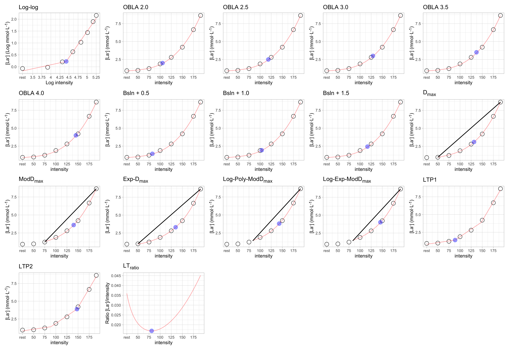
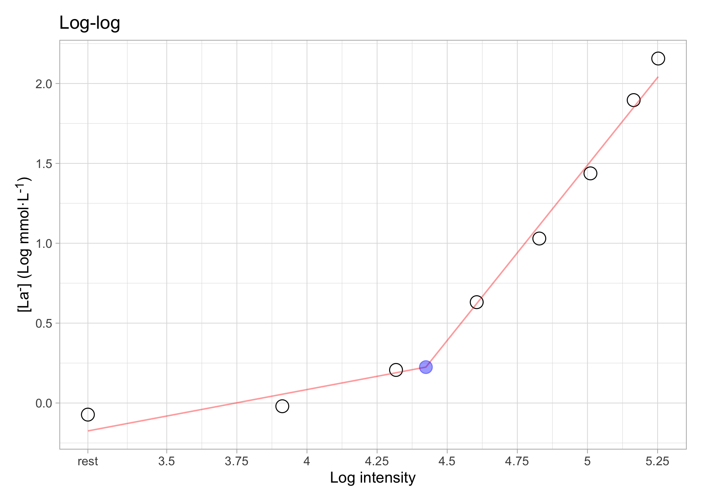
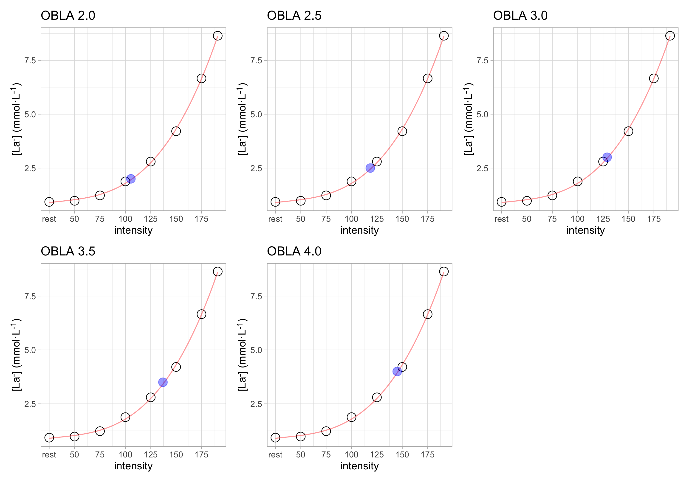
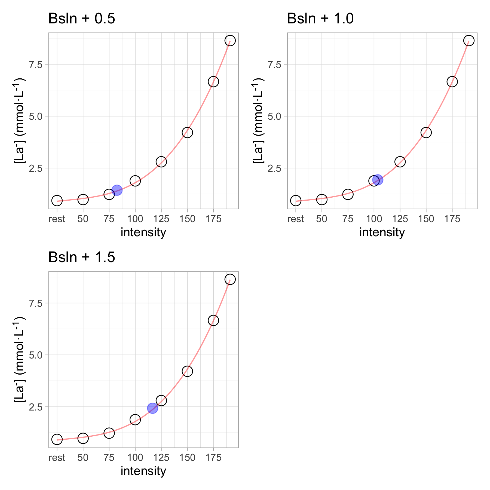
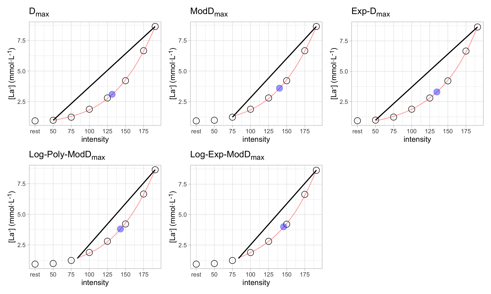
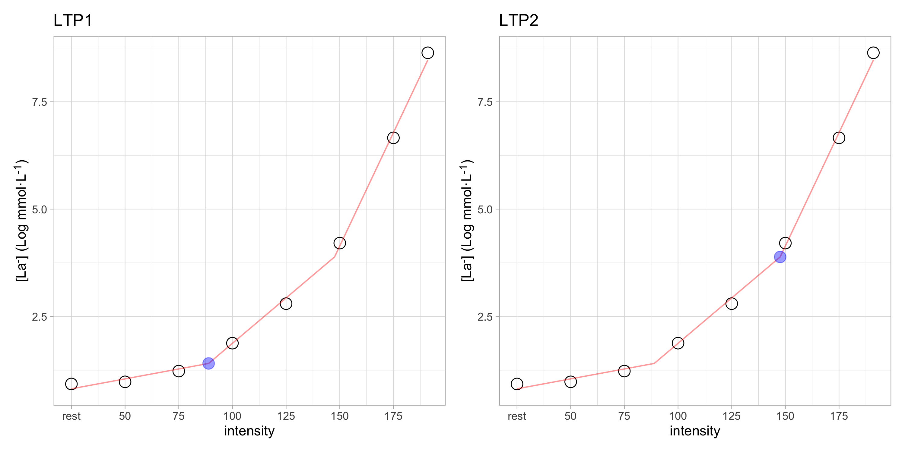
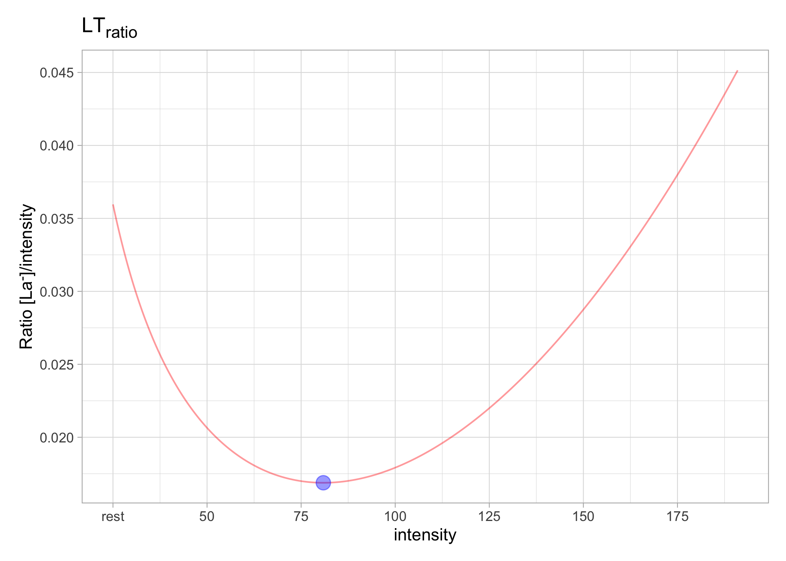

The goal of lactater is to provide tools for making it easier to analyze lactate thresholds.
Installation
You can install the released version of lactater from CRAN with:
install.packages("lactater")You can install the development version of lactater from Github with:
# install.packages("remotes")
remotes::install_github("fmmattioni/lactater")Demo data
library(lactater)
demo_data
#> step length intensity lactate heart_rate
#> 1 0 0 0 0.93 96
#> 2 1 3 50 0.98 114
#> 3 2 3 75 1.23 134
#> 4 3 3 100 1.88 154
#> 5 4 3 125 2.80 170
#> 6 5 3 150 4.21 182
#> 7 6 3 175 6.66 193
#> 8 7 2 191 8.64 198Usage
With lactater you can easily estimate lactate thresholds using one or multiple methods:
results_overall <- lactate_threshold(
.data = demo_data,
intensity_column = "intensity",
lactate_column = "lactate",
heart_rate_column = "heart_rate",
method = c("Log-log", "OBLA", "Bsln+", "Dmax", "LTP", "LTratio"),
fit = "3rd degree polynomial",
include_baseline = TRUE,
sport = "cycling",
plot = TRUE
)#> # A tibble: 17 × 7
#> method_category method fitting intensity lactate heart_rate plot
#> <fct> <fct> <chr> <dbl> <dbl> <dbl> <lis>
#> 1 Log-log Log-log 3rd degr… 68.3 1.2 131 <gg>
#> 2 OBLA OBLA 2.0 3rd degr… 105. 2 153 <gg>
#> 3 OBLA OBLA 2.5 3rd degr… 118. 2.5 160 <gg>
#> 4 OBLA OBLA 3.0 3rd degr… 129 3 167 <gg>
#> 5 OBLA OBLA 3.5 3rd degr… 137 3.5 171 <gg>
#> 6 OBLA OBLA 4.0 3rd degr… 145 4 176 <gg>
#> 7 Bsln+ Bsln + 0.5 3rd degr… 82.5 1.43 139 <gg>
#> 8 Bsln+ Bsln + 1.0 3rd degr… 104. 1.93 152 <gg>
#> 9 Bsln+ Bsln + 1.5 3rd degr… 117. 2.43 159 <gg>
#> 10 Dmax Dmax 3rd degr… 132. 3.1 168 <gg>
#> 11 Dmax ModDmax 3rd degr… 140. 3.6 173 <gg>
#> 12 Dmax Exp-Dmax Exponent… 135. 3.3 170 <gg>
#> 13 Dmax Log-Poly-ModDmax 3rd degr… 137. 3.4 172 <gg>
#> 14 Dmax Log-Exp-ModDmax Exponent… 141. 3.6 174 <gg>
#> 15 LTP LTP1 3rd degr… 88.9 1.5 143 <gg>
#> 16 LTP LTP2 3rd degr… 148. 4.1 178 <gg>
#> 17 LTratio LTratio B-Spline… 71.2 1.2 132 <gg>
You can also choose one method:
Log-log
results_loglog <- lactate_threshold(
.data = demo_data,
intensity_column = "intensity",
lactate_column = "lactate",
heart_rate_column = "heart_rate",
method = "Log-log",
fit = "3rd degree polynomial",
include_baseline = TRUE,
sport = "cycling",
plot = TRUE
)#> # A tibble: 1 × 7
#> method_category method fitting intensity lactate heart_rate plot
#> <fct> <fct> <chr> <dbl> <dbl> <dbl> <lis>
#> 1 Log-log Log-log 3rd degree polynom… 68.3 1.2 131 <gg>
OBLA
results_obla <- lactate_threshold(
.data = demo_data,
intensity_column = "intensity",
lactate_column = "lactate",
heart_rate_column = "heart_rate",
method = "OBLA",
fit = "3rd degree polynomial",
include_baseline = TRUE,
sport = "cycling",
plot = TRUE
)#> # A tibble: 5 × 7
#> method_category method fitting intensity lactate heart_rate plot
#> <fct> <fct> <chr> <dbl> <dbl> <dbl> <lis>
#> 1 OBLA OBLA 2.0 3rd degree polyno… 105. 2 153 <gg>
#> 2 OBLA OBLA 2.5 3rd degree polyno… 118. 2.5 160 <gg>
#> 3 OBLA OBLA 3.0 3rd degree polyno… 129 3 167 <gg>
#> 4 OBLA OBLA 3.5 3rd degree polyno… 137 3.5 171 <gg>
#> 5 OBLA OBLA 4.0 3rd degree polyno… 145 4 176 <gg>
Bsln+
results_bsln_plus <- lactate_threshold(
.data = demo_data,
intensity_column = "intensity",
lactate_column = "lactate",
heart_rate_column = "heart_rate",
method = "Bsln+",
fit = "3rd degree polynomial",
include_baseline = TRUE,
sport = "cycling",
plot = TRUE
)#> # A tibble: 3 × 7
#> method_category method fitting intensity lactate heart_rate plot
#> <fct> <fct> <chr> <dbl> <dbl> <dbl> <lis>
#> 1 Bsln+ Bsln + 0.5 3rd degree poly… 82.5 1.43 139 <gg>
#> 2 Bsln+ Bsln + 1.0 3rd degree poly… 104. 1.93 152 <gg>
#> 3 Bsln+ Bsln + 1.5 3rd degree poly… 117. 2.43 159 <gg>
Dmax
results_dmax <- lactate_threshold(
.data = demo_data,
intensity_column = "intensity",
lactate_column = "lactate",
heart_rate_column = "heart_rate",
method = "Dmax",
fit = "3rd degree polynomial",
include_baseline = TRUE,
sport = "cycling",
plot = TRUE
)#> # A tibble: 5 × 7
#> method_category method fitting intensity lactate heart_rate plot
#> <fct> <fct> <chr> <dbl> <dbl> <dbl> <lis>
#> 1 Dmax Dmax 3rd degre… 132. 3.1 168 <gg>
#> 2 Dmax ModDmax 3rd degre… 140. 3.6 173 <gg>
#> 3 Dmax Exp-Dmax Exponenti… 135. 3.3 170 <gg>
#> 4 Dmax Log-Poly-ModDmax 3rd degre… 137. 3.4 172 <gg>
#> 5 Dmax Log-Exp-ModDmax Exponenti… 141. 3.6 174 <gg>
LTP
results_ltp <- lactate_threshold(
.data = demo_data,
intensity_column = "intensity",
lactate_column = "lactate",
heart_rate_column = "heart_rate",
method = "LTP",
fit = "3rd degree polynomial",
include_baseline = TRUE,
sport = "cycling",
plot = TRUE
)#> # A tibble: 2 × 7
#> method_category method fitting intensity lactate heart_rate plot
#> <fct> <fct> <chr> <dbl> <dbl> <dbl> <lis>
#> 1 LTP LTP1 3rd degree polynomi… 88.9 1.5 143 <gg>
#> 2 LTP LTP2 3rd degree polynomi… 148. 4.1 178 <gg>
LTratio
results_ltratio <- lactate_threshold(
.data = demo_data,
intensity_column = "intensity",
lactate_column = "lactate",
heart_rate_column = "heart_rate",
method = "LTratio",
fit = "3rd degree polynomial",
include_baseline = TRUE,
sport = "cycling",
plot = TRUE
)#> # A tibble: 1 × 7
#> method_category method fitting intensity lactate heart_rate plot
#> <fct> <fct> <chr> <dbl> <dbl> <dbl> <list>
#> 1 LTratio LTratio B-Spline (default) 71.2 1.2 132 <gg>